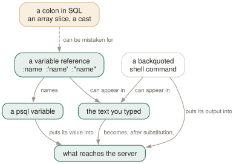

Day 12
Interpolation
Three quoting forms, one shell escape, and a colon that eats your array slices.
By the end of today you can
- interpolate a value safely as a literal and as an identifier, and say which is which
- capture a query result into variables and use it in the next statement
- recognise the two ways interpolation can quietly change the meaning of your SQL
The colon, three ways
A psql variable is read by putting a colon in front of its name, and the substitution happens in ordinary SQL as well as in meta-command arguments. That much is easy. The part worth thirty minutes is that there are three forms, they produce different text, and choosing the wrong one is either a bug or a vulnerability.
:name- the value, copied in literally. Nothing is quoted or checked. Right for things that are not values — a whole query, a
WHEREclause, a column list. :'name'- the value as a properly quoted SQL literal. Right for anything that is data. It handles embedded quotes, which is the bit you get wrong by hand.
:"name"- the value as a properly quoted SQL identifier. Right for table, column and schema names. It survives spaces and preserves case.
testdb=# \set t my_table
testdb=# \set v 'it''s'
testdb=# SELECT * FROM :"t" LIMIT 1;
first | second
-------+--------
1 | one
(1 row)
testdb=# SELECT :'v' AS lit;
lit
------
it's

[1:n] quietly becomes [12] if n happens to be set to 2.Where interpolation does not happen
Three exceptions, and all of them are deliberate.
First, never inside a quoted SQL literal or identifier. So ':name' is the four-character string :name, not the value:
testdb=# \set v hello
testdb=# SELECT ':v' AS in_quotes;
in_quotes
-----------
:v
If it did work, the substituted value would sit inside quotes psql had not escaped it for, so a value containing ' would break out of the literal. The manual page says as much: it “would be unsafe if it did work”. :'v' — colon on the outside — is the form that does the escaping.
Second, and this one bites in meta-command arguments rather than in SQL: substitution happens only for an unquoted colon. So the single quotes you add for readability are exactly what stops the substitution you wanted:
testdb=# \warn 'against :DBNAME'
against :DBNAME
testdb=# \warn against :DBNAME
against testdb
Which is not a contradiction of the three forms above — :'name' has the colon on the outside, and it is that outer colon that is unquoted. Quote the whole thing and there is no unquoted colon left to act on.
Third, an unset name is left completely alone. :nosuchvar is passed through to the server, which is why a typo in a variable name shows up as a SQL syntax error at a colon rather than as an empty string:
testdb=# SELECT 1 WHERE :nosuchvar IS NULL;
ERROR: syntax error at or near ":"
LINE 1: SELECT 1 WHERE :nosuchvar IS NULL;
^
Getting values in
Four ways, and \gset is the one that changes how you work:
testdb=# SELECT count(*) AS n, max(first) AS hi FROM my_table
testdb-# \gset
testdb=# \echo :n :hi
4 4
One column becomes one variable, named after the column, so alias your expressions. A prefix argument namespaces them: \gset res_ gives you :res_n and :res_hi. The rules for the edge cases are strict and worth knowing:
- The query must return exactly one row. If it fails, or returns none, or returns several, no variable is changed at all.
- A NULL column unsets its variable rather than setting it to anything. Pair that with
:{?name}—TRUEorFALSEdepending on whether the variable exists — and “did the lookup find anything” becomes testable. - On an empty buffer,
\gsetre-runs the last query, like\g.
The other three are simpler:
\getenv v HOME- read an environment variable into a psql variable. The only way in, since psql does not expand $VAR.
\setenv PAGER less- the reverse: set an environment variable for psql and everything it runs — including your pager and your editor.
\prompt 'schema? ' s- ask the operator. Uses the terminal, unless
-fwas given, in which case it reads standard input — which is how you pipe an answer in.
Backquotes, and why the quoted form matters
Text in backquotes inside a meta-command argument is run by the shell, and its output — minus the trailing newline — replaces it. Variable references inside the backquotes are substituted first:
testdb=# \set today `date +%F`
testdb=# SELECT :'today'::date AS d;
testdb=# \echo `hostname`
Both :name and :'name' work inside backquotes, and the difference is the same difference as everywhere else — except that here the consequence is shell injection rather than SQL injection:
testdb=# \set arg 'a; echo INJECTED'
testdb=# \echo `echo :arg`
a
INJECTED
testdb=# \echo `echo :'arg'`
a; echo INJECTED
The quoted form wraps the value as a single shell argument. The manual page recommends it outright — “almost always preferable, unless you are very sure of what is in the variable” — and there is one case where it refuses to work at all: a value containing a newline or carriage return cannot be safely quoted on every platform, so psql prints an error and leaves the reference unsubstituted.
Two variables report on the shell command afterwards: SHELL_EXIT_CODE (0–127 for exit codes, 128–255 for a signal, −1 if psql could not launch it) and SHELL_ERROR (true/false). They cover backquotes and \!, \g |, \o |, \w | and \copy ... PROGRAM — with the wrinkle that for \o they only update when the pipe is closed by the next \o.
psql's nearest thing to an alias
Because :name substitutes raw text into SQL, a variable can hold an entire query — and then its name is a command:
\set act 'SELECT pid, state, left(query,40) FROM pg_stat_activity ORDER BY query_start;'
testdb=# :act
pid | state | left
-----+--------+----------------------------------
303 | active | SELECT pid, state, left(query,40)
Note the doubled '', which is how a single quote gets into a \set argument. A handful of these in your psqlrc is the closest psql comes to letting you name your own commands, and it is the reason the config box for today is two long lines rather than a setting.
psqlrc:2: error: unterminated quoted string
psqlrc:3: ERROR: syntax error at or near "WHERE"
psqlrc:4: ERROR: unterminated quoted string at or near "'
The second and third lines of the wrapped value were read as SQL and sent to the server, which is a good illustration of the rule from Day 1: parsing of a meta-command's arguments stops at the end of the line, and what follows is ordinary input again.
Today's habit
Two things. Use :"name" and :'name' rather than :name unless you can say why the raw form is safe. And start collecting stored queries in your psqlrc, one per thing you have looked up twice.
Tomorrow: three commands that make psql write and run its own SQL.
New vocabulary
Commands
| Command | Does |
|---|---|
:name | Substitute the value literally — unquoted, unchecked, unsafe. |
:'name' | Substitute as a properly quoted SQL literal. Handles embedded quotes. |
:"name" | Substitute as a properly quoted SQL identifier. Handles spaces and case. |
:{?name} | TRUE or FALSE depending on whether the variable exists. |
`command` | Substitute a shell command's output, trailing newline removed. |
\gset [prefix] | Store a one-row result into variables named after its columns. |
\getenv var ENVVAR | Read an environment variable into a psql variable. |
\setenv NAME value | Set an environment variable for psql and anything it runs. |
\prompt [text] name | Ask the operator for a value and store it. |
Options
| Option | Does |
|---|---|
SHELL_ERROR SHELL_EXIT_CODE | Whether the last shell command failed, and its exit status. |
Today's configappend to ~/.psqlrc
Two queries you will otherwise retype for the rest of your career, stored as variables: type :act to see what is running and :waits to see what is blocked. The doubled '' inside the value is how you get a single quote into a \set argument. Add your own — this is psql's nearest thing to an alias.
\set act 'SELECT pid, age(clock_timestamp(), query_start) AS running, state, left(query, 40) AS query FROM pg_stat_activity WHERE state <> ''idle'' AND pid <> pg_backend_pid() ORDER BY query_start;'
\set waits 'SELECT pid, wait_event_type, wait_event, left(query, 40) AS query FROM pg_stat_activity WHERE wait_event IS NOT NULL ORDER BY pid;'
psql reads this once at start-up, after connecting. Re-read it in place with \i ~/.psqlrc.
Drillsdo these in a real terminal, today
Self-check
Answer out loud first, then unfold.
You have \set n 2 set from earlier. Then you run SELECT (array[10,20,30])[1:n]; and get NULL. What did the server actually receive?
SELECT (array[10,20,30])[12]; — element twelve of a three-element array, which is NULL. psql saw :n, replaced it with 2, and in doing so ate the colon that made it a slice.
The colon is standard SQL for embedded query languages, and PostgreSQL then gave it two more meanings — array slices and :: casts. Nothing detects the collision, because 1:n is perfectly valid either way. Escape it with a backslash — [1\:3] — or, better, do not leave short lower-case variables lying around. Run \set with no arguments if a query starts behaving oddly.
When do you use :name, :'name' and :"name"?
Three forms, three jobs, and picking the wrong one is either a bug or a vulnerability:
:name- raw text. For fragments that are not values at all — a whole query, a WHERE clause, a number you are sure of.
:'name'- a quoted SQL literal. For anything that is data. It handles embedded quotes correctly, which is exactly what you would get wrong by hand.
:"name"- a quoted SQL identifier. For table, column and schema names — it survives spaces and preserves case.
The manual page's warning about the raw form is worth quoting: “the value of the variable is copied literally, so it can contain unbalanced quotes, or even backslash commands”. If the value came from outside your session, use one of the quoted forms.
SELECT ':name'; prints :name rather than the value, but SELECT :'name'; works. Why the asymmetry?
Because interpolation is deliberately not performed inside quoted SQL literals and identifiers. If it were, you could not write a string containing a colon, and — worse — the substituted value would not be escaped for the quotes it landed inside, so a value containing ' would break out of the literal.
So ':name' is a string, and :'name' — colon first — asks psql to produce a correctly quoted literal from the variable. The two look almost identical on the page and mean entirely different things.
A script does \gset after a query that returns no rows, then uses the variables. What happens?
The variables keep whatever they held before. \gset requires exactly one row, and if the query fails or returns any other number of rows, no variable is changed — it reports the problem and moves on. A NULL column is different again: it unsets the corresponding variable rather than setting it to anything.
That NULL rule is the useful half, because it pairs with :{?name}, which is TRUE or FALSE depending on whether the variable exists. So “did that lookup find anything” becomes \if :{?found}, which is Day 14's whole vocabulary.
Cheat sheet
Three forms, three jobs. Raw for fragments, ' for data, " for names.
:name -- raw text, unquoted, unchecked. For query fragments only.
:'name' -- a quoted SQL LITERAL -> use for data
:"name" -- a quoted SQL IDENTIFIER -> use for table/column/schema names
:{?name} -- TRUE / FALSE: is the variable set at all
':name' -- just a string. Interpolation NEVER happens inside quotes.
:nosuchvar -- an unset name is passed through untouched -> a syntax error at ':'
[1:n] -- COLLISION: if n is set, the colon is eaten. Escape it: [1\:3]
SELECT ... AS n \gset [prefix] -- exactly one row; NULL column UNSETS the variable
\getenv v HOME \setenv PAGER less \prompt 'text ' v
`cmd` -- shell output, trailing newline removed. :'v' inside it is SAFE, :v is not
:SHELL_EXIT_CODE :SHELL_ERROR -- after `cmd`, \!, \g |, \o |, \w |, \copy PROGRAM
Everything through Day 12
Keys
| Key | Does |
|---|---|
| C-c | Abandon the line you are typing and empty the query buffer. |
| C-d | End the session — but only when the buffer is empty. |
| Tab | Complete a keyword or an object name. Twice for a menu, depending on the library. |
| UpC-p | The previous line from the history. |
| C-r | Reverse incremental search through the history. The one worth learning today. |
Commands
| Command | Does |
|---|---|
psql | Connect with the defaults and start an interactive session. |
; | Dispatch the buffer. Not a meta-command — SQL's own statement terminator. |
\g | Dispatch the buffer, exactly as a semicolon does. |
\p | Print the buffer without sending it. \print in full. |
\r | Reset: throw the buffer away. \reset in full. |
\e | Edit the buffer in $EDITOR; on exit it is re-parsed and run. |
\w file | Write the buffer to a file instead of sending it. |
\; | Append a semicolon to the buffer without dispatching it. |
\? | Every meta-command, in twelve groups. 121 of them in 18.6. |
\h SELECT | Syntax for one SQL command. \h alone lists what it knows. |
\q | Quit. |
\c dbname | Reconnect to another database, reusing host, port and user. |
\c - user | Reconnect as another user. A dash means “leave that one as it is”. |
\c -reuse-previous=on ... | Merge a conninfo string onto the current parameters. |
\conninfo | A twelve-row table describing the live connection. |
\password | Change a password without it reaching your history or the server log. |
\encoding | Show the client encoding, or set it. |
\d | Bare: tables, views, materialized views, sequences and foreign tables. |
\d my_table | Describe one relation: columns, types, nullability, defaults, indexes, constraints. |
\d+ my_table | Adds storage, compression, stats target and per-column comments. |
\dt | Tables. The letters combine — \dti lists tables and indexes. |
\di \dv \dm \ds \dE | Indexes, views, materialized views, sequences, foreign tables. |
\dn | Schemas. \dn+ adds permissions and comments. |
\l | Databases, with owner, encoding, locale provider and privileges. |
\dP | Partitioned tables and indexes; add n to include non-root ones. |
\dx | Installed extensions; \dx+ lists everything each one owns. |
\df pattern | Functions, with result type, argument types and kind. |
\df pattern t1 t2 | Extra arguments are type patterns, matched positionally. |
\sf name | The function's source as CREATE OR REPLACE. \sf+ numbers the body. |
\sv name | The same for a view. \ev and \ef edit rather than show. |
\du | Roles and their attributes. \dg is the same command. |
\drg | Role grants: who is a member of what, with ADMIN/INHERIT/SET. |
\dp | Access privileges on tables, views and sequences. \z is the same command. |
\ddp | Default privileges — what future objects will be created with. |
\dconfig | Server parameters set to non-default values. \dconfig * for all of them. |
\drds | Settings attached to a role, a database, or the pair. |
\dT \do \da | Types, operators and aggregates — same grammar, rarer questions. |
\pset | With no argument, print all 22 printing options and their current values. |
\x | Toggle expanded mode. \x auto is the setting worth keeping. |
\a \t \f \C \H | Shortcuts kept for compatibility: format, tuples_only, fieldsep, title, HTML. |
\set | With no argument, list every variable currently set, with its value. |
\set NAME value | Set a psql variable. Several values are concatenated. |
\unset NAME | Delete it — or, for a control variable, restore its default. |
\echo :NAME | Read a variable back. The cheapest debugging tool psql has. |
\i ~/.psqlrc | Re-read the startup file without restarting. Tilde expansion works. |
\e | Edit the buffer — or a file, or the last query — optionally at a line number. |
\ef name | Fetch a function's definition into your editor. \ev for a view. |
\s file | Print the command history, or write it to a file. |
\errverbose | Repeat the last error at maximum verbosity, changing no settings. |
\timing on | Report how long each statement took. Milliseconds, then m:ss past a second. |
\copy tbl FROM 'file' | Client-side load. psql reads the file, as you, with no server privileges. |
\copy (query) TO 'file' | Client-side export. A table name, or a query in parentheses. |
\copy tbl FROM PROGRAM 'cmd' | Run a command on the client and load its output. TO PROGRAM pipes out. |
\copy tbl FROM stdin | Data rows follow, up to a line containing only \.. |
\copy ... TO pstdout | psql's real stdout, ignoring \o. pstdin is the input twin. |
\copy ... FROM 'f' WHERE cond | Filter rows as they load — the condition is evaluated server-side. |
COPY ... TO STDOUT then \g f | The multi-line, interpolating alternative to \copy. |
\o file | Point all future query output at a file. Bare \o restores stdout. |
\o |command | Pipe all future query output to a shell command. |
\g file | This one query's output to a file. \g |cmd pipes it instead. |
\g (opt=val ...) | A one-shot \pset for this query only. |
\qecho text | Write to the query-output channel, so it lands in the same file. |
\warn text | Write to standard error, so it never lands in the file. |
\w file | Write the query buffer — not its output — to a file. |
\lo_import file | Store a file as a large object. Also \lo_export, \lo_list, \lo_unlink. |
\i file | Read and execute a file. The path is relative to the current directory. |
\ir file | The same, resolved relative to the directory of the including script. |
\! command | Run a shell command. With no argument, a sub-shell until you exit it. |
:name | Substitute the value literally — unquoted, unchecked, unsafe. |
:'name' | Substitute as a properly quoted SQL literal. Handles embedded quotes. |
:"name" | Substitute as a properly quoted SQL identifier. Handles spaces and case. |
:{?name} | TRUE or FALSE depending on whether the variable exists. |
`command` | Substitute a shell command's output, trailing newline removed. |
\gset [prefix] | Store a one-row result into variables named after its columns. |
\getenv var ENVVAR | Read an environment variable into a psql variable. |
\setenv NAME value | Set an environment variable for psql and anything it runs. |
\prompt [text] name | Ask the operator for a value and store it. |
Options
| Option | Does |
|---|---|
-h -p -U -d | Host, port, user, database. -d also takes a whole conninfo string. |
-w -W | Never prompt for a password / always prompt. Both persist across \c. |
-l | List databases and exit. Connects to postgres unless told otherwise. |
PGHOST PGPORT PGUSER PGDATABASE | libpq's defaults for the four parameters. |
PGPASSFILE | The password file. Default ~/.pgpass, and it must be mode 0600. |
PGSERVICEFILE | Named connection recipes. Default ~/.pg_service.conf. |
S | Include system objects: \dtS. Supplying any pattern does this too. |
+ | More columns — and a size lookup per relation, so it is not free. |
x | Expanded output for this listing only. Goes after S or +, never straight after \d. |
a n p t w | Function-kind filters for \df: aggregate, normal, procedure, trigger, window. |
format | aligned (default), wrapped, unaligned, csv, html, asciidoc, latex, troff-ms. |
expanded | on / off (default) / auto — vertical records, always or only when too wide. |
null | What to print for NULL. Default is nothing, which reads exactly like an empty string. |
border | 0 none, 1 dividing lines (default), 2 a full frame. |
linestyle | ascii (default) or unicode. Aligned and wrapped only. |
footer | The (n rows) line. off removes it. |
columns | Target width for wrapped, and the threshold for expanded auto. 0 means use $COLUMNS. |
pager | off / on (default, meaning “only when it does not fit”) / always. |
xheader_width | full (default) / column / page / an integer — how long the record rule may be. |
-X | Skip both startup files. Every script should pass this. |
PSQLRC | Where the personal startup file lives. Overrides ~/.psqlrc. |
PGSYSCONFDIR | Where the system-wide psqlrc is looked for. |
QUIET | Suppress psql's informational chatter. The startup file's bookends. |
VERSION_NAME SERVER_VERSION_NUM | psql's version and the server's, as a string and a number. |
HISTFILE | Where history is kept. Default ~/.psql_history. Must be set in psqlrc. |
HISTSIZE | How many commands to keep. Default 500; a negative value means no limit. |
HISTCONTROL | ignorespace / ignoredups / ignoreboth / none (default). |
COMP_KEYWORD_CASE | Casing for completed keywords. Default preserve-upper. |
PSQL_EDITOR EDITOR VISUAL | Checked in that order. vi if none of them is set. |
PSQL_EDITOR_LINENUMBER_ARG | How a line number is passed. Default +, which suits vi and emacs. |
AUTOCOMMIT | On by default: every statement commits itself unless you opened a block. |
ON_ERROR_ROLLBACK | off (default) / interactive / on — implicit per-statement savepoints. |
ON_ERROR_STOP | Stop at the first error instead of carrying on. Exit code 3 in a script. |
VERBOSITY | default / verbose / terse / sqlstate. |
SHOW_CONTEXT | never / errors (default) / always — the CONTEXT field. |
ERROR SQLSTATE ROW_COUNT | Set after every statement: did it fail, with what code, how many rows. |
LAST_ERROR_MESSAGE LAST_ERROR_SQLSTATE | The most recent failure, still there after later successes. |
-o file | Send all query output to a file, decided at start-up. |
-L file | Log each query and its output to a file, as well as to the normal destination. |
tuples_only | Data only — no header, no footer, no title. -t on the command line. |
fieldsep recordsep csv_fieldsep | Separators for unaligned and CSV output; -F, -R, -z, -0. |
-c command | Run one command and exit. Repeatable, and mixable with -f. |
-f file | Read commands from a file. Repeatable, and gives errors a file and line number. |
-X | Skip the startup files. Every script wants this. |
-q | No banner, no informational chatter. Same as QUIET. |
-v NAME=value | Set a variable from the command line. The value is not interpolated. |
-1 | Wrap everything the -c and -f options do in one transaction. |
ECHO | none (default) / queries (-e) / all (-a) / errors (-b). |
-s -S | Single-step: confirm each statement. Single-line: a newline terminates one. |
SHOW_ALL_RESULTS | Show every result of a \;-combined query, not just the last. Default on. |
SHELL_ERROR SHELL_EXIT_CODE | Whether the last shell command failed, and its exit status. |